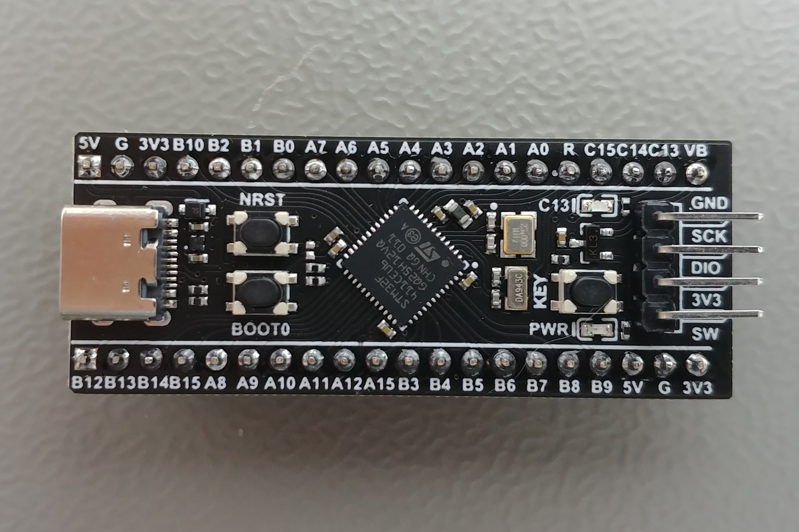

GPIO et Interruptions
Ir Paul S. Kabidu, M.Eng. spaulkabidu@gmail.com
GPIO
Les GPIO (General Purpose Input-Output) sont des périphériques d'entrée-sortie numériques. Le STM32F4 dispose de plusieurs ports nommés (GPIOA, GPIOB, …, GPIOH). Chaque port possède ses propres registres de configuration sur 32 bits.
Registres principaux :
| Registre | Nom | Description |
|---|---|---|
| MODER | Mode Register | Configure la direction de chaque broche (00: Entrée, 01: Sortie, 10: Fonction alternative, 11: Analogique). |
| IDR | Input Data Register | Permet de lire l'état logique présent sur les broches configurées en entrée. |
| ODR | Output | Data Register |
| BSRR | Bit Set/Reset Register | Permet de modifier l’état de manière atomique en une seule écriture. On peut positionner un bit à 1 (Set) ou à 0 (Reset) sans affecter les autres bits. C’est plus sûr en environnement multitâche ou avec interruptions. |
Configuration d'une Sortie (LED sur PC13)
Pour faire clignoter une LED, nous devons suivre trois étapes logiques dans les registres :
- Activer l’horloge du port (RCC) : Sans horloge, le périphérique est inactif. Exemple : RCC_AHB1ENR
- Configurer la broche en sortie via le registre MODER.
- Piloter l’état en écrivant dans BSRR ou ODR.
Exemple Pratique : Faire clignoter la LED (PC13)
#include "stm32f4xx.h"
// Code Sans RTOS
void main(void) {
// 1. Activer l'horloge du Port C (Bit 2 à 1)
RCC->AHB1ENR |= RCC_AHB1ENR_GPIOCEN; // 1. Horloge ON
// 2. Configurer PC13 en sortie (Bits 26-27 à 01)
GPIOC->MODER |= (1 << (13 * 2)); // 2. PC13 en Sortie
while(1) {
GPIOC->BSRR = (1 << (13 + 16)); // LED ON (Reset bit 13)
for(int i=0; i<500000; i++); // Attente logicielle (Bloque le CPU)
GPIOC->BSRR = (1 << 13); // LED OFF (Set bit 13)
for(int i=0; i<500000; i++);
}
}
Usage du registre ODR :
#include "stm32f4xx.h"
// Code Bare Metal pur (Sans RTOS)
void main(void) {
// 1. Activer l'horloge du Port C (Bit 2 à 1)
RCC->AHB1ENR |= RCC_AHB1ENR_GPIOCEN; // 1. Horloge ON
// 2. PC13 en sortie (Bits 26-27 à 01)
GPIOC->MODER |= (1 << (13 * 2)); // 2. PC13 en Sortie
while(1) {
GPIOC->ODR ^= (1 << 13); // Inverser l'état
for(int i=0; i<1000000; i++); // ATTENTE INUTILE : Le CPU "compte ses doigts"
}
}
Problème des boucles for :
Pendant ces attentes, le processeur est totalement occupé à décrémenter un compteur. Si un événement externe survient (appui sur un bouton), il ne pourra pas y réagir avant la fin de la boucle. C'est pourquoi, dans un système temps réel, on préfère des mécanismes non bloquants comme les interruptions ou les délais gérés par un RTOS (par exemple vTaskDelay() sous FreeRTOS).
Gestion des Entrées/Sorties dans une Tâche
Dans une approche bare metal classique, on utilise des boucles d'attente active (for(i=0; i<delay; i++);) pour créer des temporisations delay(). Ces boucles monopolisent le processeur, l'empêchant de réagir à d'autres événements pendant toute leur durée.
Avec FreeRTOS, la philosophie change : quand une tâche n'a rien d'utile à faire (par exemple en attendant qu'une LED clignote), elle doit rendre la main pour qu'une autre tâche puisse s'exécuter. C'est le rôle de vTaskDelay().
La fonction vTaskDelay() place la tâche courante dans l'état Blocked pendant une durée donnée. Pendant ce temps, le processeur peut exécuter d'autres tâches prêtes. À l'expiration du délai, la tâche repasse dans l'état Ready et sera automatiquement reprise par l'ordonnanceur.
void vTaskBlink(void *pvParameters) {
// Configuration de la broche PC13 en sortie (une seule fois)
RCC->AHB1ENR |= RCC_AHB1ENR_GPIOCEN; // Activer horloge du port C
GPIOC->MODER |= (1 << (13 * 2)); // PC13 en sortie (01)
for (;;) {
GPIOC->ODR ^= (1 << 13); // Inverser l'état de la LED
vTaskDelay(pdMS_TO_TICKS(500)); // Délai non‑bloquant de 500 ms
}
}
- La macro
pdMS_TO_TICKS(500)convertit une durée en millisecondes en nombre de ticks système (dépend deconfigTICK_RATE_HZ). - Pendant
pdMS_TO_TICKS(500), la tâchevTaskBlinkdort et elle ne consomme 0% du CPU. L'ordonnanceur peut alors exécuter d'autres tâches de priorité inférieure ou égale.
L'Approche Interruptions Externes (EXTI) : GPIO + Interruption + FreeRTOS
Pour ne plus ignorer un événement comme l'appui sur un bouton, on utilise le mécanisme des interruptions externes (EXTI). Une interruption est un signal matériel qui force le processeur à suspendre temporairement le programme en cours pour exécuter une routine spécifique appelée ISR (Interrupt Service Routine). C'est l'équivalent d'une sonnette : le processeur, quelle que soit sa tâche, s'arrête, répond à la sonnette, puis reprend son activité là où il s'était arrêté.
Sur STM32F4, la configuration d'une interruption externe sur une broche (par exemple PA0) suit plusieurs étapes clés :
- Activer l'horloge du GPIO et du module
SYSCF(System Configuration Controller) qui permet de connecter la ligne d'interruption au bon port. - Configurer la broche en entrée avec éventuellement une résistance de pull-up/pull-down.
- Sélectionner la source EXTI via les registres
SYSCFG_EXTICR, on associe la ligne EXTI (par exemple EXTI0) au port souhaité (GPIOA). - Configurer le front déclencheur, on choisit si l'interruption se déclenche sur un front montant (
EXTI_RTSR), descendant (EXTI_FTSR), ou les deux. - Démasquer la ligne EXTI : on autorise l'interruption pour cette ligne via le registre EXTI_IMR.
- Configurer et activer l'interruption dans le NVIC : le Nested Vectored Interrupt Controller (NVIC) est le gestionnaire d'interruptions du Cortex-M. On doit définir sa priorité et l'activer.
Une fois ces étapes réalisées, chaque fois que le front configuré se produit sur la broche, le processeur exécute immédiatement la fonction handler correspondante (par exemple EXTI0_IRQHandler). L'ISR doit être la plus courte possible; son seul rôle est de signaler l'événement à une tâche (via un sémaphore ou une notification) pour que le traitement long soit effectué hors interruption, dans le contexte d'une tâche RTOS.
Voici un exemple complet et détaillé de configuration d'une interruption externe (EXTI) sur la broche PA0 d'un STM32F4. Dans le handler ISR, on bascule l'état d'une LED sur PC13 (ou on incrémente un compteur).
#include "stm32f4xx.h" // Fichier d'en-tête CMSIS pour STM32F4
// Définitions de broches pour plus de clarté
#define BTN_PORT GPIOA
#define BTN_PIN 0
#define LED_PORT GPIOC
#define LED_PIN 13
// Compteur d'appuis (optionnel)
volatile uint32_t buttonPressCount = 0;
void GPIO_Init(void) {
// 1. Activer l'horloge pour les ports A et C
RCC->AHB1ENR |= RCC_AHB1ENR_GPIOAEN | RCC_AHB1ENR_GPIOCEN;
// Configuration de PA0 en entrée avec pull-up
// Mode : 00 = entrée (défaut après reset, mais on force pour être sûr)
BTN_PORT->MODER &= ~(3U << (BTN_PIN * 2)); // Bits 0-1 = 00
// Activer la résistance de pull-up : PUPDR bits 0-1 = 01
BTN_PORT->PUPDR |= (1U << (BTN_PIN * 2));
BTN_PORT->PUPDR &= ~(2U << (BTN_PIN * 2)); // Bit suivant à 0
// Configuration de PC13 en sortie (pour la LED)
LED_PORT->MODER |= (1U << (LED_PIN * 2)); // Bits 26-27 = 01 (sortie)
LED_PORT->MODER &= ~(2U << (LED_PIN * 2));
// Par défaut, sortie push-pull (OTYPER = 0) et vitesse moyenne (OSPEEDR = 0)
}
void EXTI_Init(void) {
// 2. Activer l'horloge de SYSCFG (nécessaire pour EXTI)
RCC->APB2ENR |= RCC_APB2ENR_SYSCFGEN;
// 3. Connecter la ligne EXTI0 au port A
// SYSCFG_EXTICR1 contrôle les lignes EXTI0 à EXTI3.
// Chaque groupe de 4 bits correspond à une ligne.
// Pour EXTI0, les bits 0-3 de EXTICR1 doivent être 0000 pour GPIOA.
SYSCFG->EXTICR[0] &= ~SYSCFG_EXTICR1_EXTI0; // Efface les bits (par défaut 0 = PA)
// 4. Sélectionner le front descendant comme déclencheur
EXTI->FTSR |= (1 << 0); // Front descendant sur ligne 0
// (Si on voulait aussi le front montant, on utiliserait EXTI->RTSR)
// 5. Démasquer l'interruption pour la ligne 0
EXTI->IMR |= (1 << 0);
// 6. Configurer la priorité et activer l'interruption dans le NVIC
NVIC_SetPriority(EXTI0_IRQn, 1); // Priorité 1 (plus haut = plus prioritaire)
NVIC_EnableIRQ(EXTI0_IRQn); // Activer l'interruption
}
// Handler de l'interruption EXTI0
void EXTI0_IRQHandler(void) {
// Vérifier que l'interruption vient bien de la ligne 0
if (EXTI->PR & (1 << 0)) {
// Effacer le flag d'interruption en écrivant 1 dans le registre PR
EXTI->PR = (1 << 0);
// Traitement de l'appui bouton
// Exemple : basculer la LED
LED_PORT->ODR ^= (1 << LED_PIN);
// Exemple alternatif : incrémenter un compteur
buttonPressCount++;
}
}
int main(void) {
GPIO_Init();
EXTI_Init();
while (1) {
// Boucle principale vide : tout se passe dans l'interruption
// On pourrait aussi lire le compteur ou faire d'autres tâches
// Une petite temporisation pour éviter de saturer le CPU (optionnel)
for (volatile int i = 0; i < 1000000; i++);
}
}
Synchronisation ISR vers Tâche (Sémaphore)
Le principe fondamental dans un système temps réel est de déléguer le traitement des événements matériels à des tâches. L'interruption (ISR) doit être la plus courte possible : elle ne fait que signaler l'événement à une tâche qui, elle, effectuera le traitement long. C'est-a-dire tout simplement elle ne fait que "réveiller" une tâche de traitement. Pour cette signalisation, on utilise un Sémaphore Binaire.
Un sémaphore binaire est un objet RTOS qui peut être soit disponible, soit non disponible. Une tâche qui attend un sémaphore (xSemaphoreTake) se bloque jusqu'à ce que le sémaphore soit donné (xSemaphoreGive). L'interruption donne le sémaphore, réveillant ainsi la tâche.
Exemple : Un bouton (PA0) réveillant une tâche via une interruption EXTI.
A. Le Handler d'Interruption (ISR)
#include "stm32f401xx.h" // Définitions des registres STM32F4
#include "FreeRTOS.h" // Types et macros FreeRTOS
#include "task.h" // API tâches
#include "semphr.h" // API sémaphores
// Handle du sémaphore (déclaré externe ou global)
extern SemaphoreHandle_t xSemBouton;
// 1. L'Interruption (Courte et rapide)
void EXTI0_IRQHandler(void) {
BaseType_t xWoken = pdFALSE;
if (EXTI->PR & EXTI_PR_PR0) { // Vérifie le flag EXTI0
EXTI->PR = EXTI_PR_PR0; // // Effacer le flag // Acquitte l'interruption
// Dire à FreeRTOS : "Le bouton a été pressé, libère le sémaphore !"
xSemaphoreGiveFromISR(xSemBouton, &xWoken); // Débloque la tâche associée
// Si une tâche de plus haute priorité a été réveillée,
// Force le changement de contexte immédiat
portYIELD_FROM_ISR(xWoken);
}
}
B. La Tâche de Traitement
// 2. La Tâche (Tranquille et organisée)
void vTaskBouton(void *pvParameters) {
for (;;) {
// Attend l'alerte de l'interruption, le sémaphore indéfiniment (bloqué jusqu'à réception) (0% CPU en attente)
if (xSemaphoreTake(xSemBouton, portMAX_DELAY) == pdPASS) {
// Traitement lourd ici (ex: envoyer un message UART)
Action_Apres_Appui();
}
}
}
Remarque importante pour FreeRTOS :
- Dans une ISR, on ne peut pas appeler directement les fonctions FreeRTOS classiques comme
xSemaphoreTake()ouxQueueReceive(). On utilise leurs versions spéciales suffixéesFromISR(par exemplexSemaphoreGiveFromISR(),xQueueSendFromISR). - De plus, la priorité de l'interruption doit être numériquement supérieure ou égale à
configLIBRARY_MAX_SYSCALL_INTERRUPT_PRIORITY(généralement définie à 5 dansFreeRTOSConfig.h) pour que ces fonctions puissent être appelées sans risque. Si la priorité est plus haute (chiffre plus petit), le noyau ne pourra pas gérer correctement les appels FromISR et le système pourrait planter. Une priorité de 0 (la plus haute) est réservée aux interruptions qui ne doivent jamais utiliser l'API FreeRTOS.
Système de Contrôle de LED avec Anti-rebond et File de Messages
Concevoir un système robuste de pilotage d'une LED (PC13) à l'aide d'un bouton-poussoir (PA0) sur une carte Black Pill STM32F401. Le projet doit démontrer la capacité à mélanger la manipulation directe des registres et les mécanismes de synchronisation temps réel.

Cahier des Charges
-
Détection Matérielle (Réactivité) :
- L'appui sur le bouton PA0 doit être détecté par une interruption externe (EXTI) pour garantir une réaction immédiate, même si le processeur exécute d'autres calculs.
- Le processeur ne doit rester dans l'interruption que le temps strictement nécessaire pour signaler l'événement.
-
Traitement du Signal (Fiabilité) :
- Une tâche dédiée (vTaskBouton) doit attendre le signal de l'interruption via un Sémaphore Binaire.
- Pour éviter les déclenchements intempestifs dus aux rebonds mécaniques du bouton, implémenter un anti-rebond (Debounce) logiciel de 20ms en utilisant les fonctions de délai non-bloquantes de FreeRTOS.
- Après le délai, effectuer une lecture directe du registre IDR pour confirmer que le bouton est toujours pressé.
-
Communication Inter-tâches (Modularité) :
- Une fois l'appui confirmé, la tâche de lecture doit envoyer un ordre de changement d'état ("Toggle") dans une File de messages (Queue).
- Une tâche de sortie (vTaskLED) doit surveiller cette file. Dès qu'un message arrive, elle doit inverser l'état de la LED PC13 en manipulant le registre ODR.
-
Optimisation Énergétique :
- Le système doit être conçu de manière à ce qu'aucune tâche ne consomme de cycles CPU lorsqu'il n'y a pas d'activité sur le bouton (utilisation de portMAX_DELAY).
-
Contraintes Techniques (Bare Metal):
- RCC : Activer les horloges des GPIOA et GPIOC.
- GPIO : Configurer PC13 en sortie et PA0 en entrée avec résistance de Pull-up.
- SYSCFG / EXTI : Mapper la ligne EXTI0 sur le port A.
- NVIC : Configurer la priorité de l'interruption (supérieure ou égale à 5) pour être compatible avec l'API FreeRTOS.
#include "stm32f401xx.h"
#include "FreeRTOS.h"
#include "task.h"
#include "semphr.h"
#include "queue.h"
// Ressources FreeRTOS
SemaphoreHandle_t xSemBouton; // Signal d'interruption
QueueHandle_t xQueueLED; // File de commandes (0 = Off, 1 = On, 2 = Toggle)
// Configuration des Sorties (LED)
void Init_LED_PC13(void) {
// 1. Activer l'horloge du Port C
RCC->AHB1ENR |= RCC_AHB1ENR_GPIOCEN;
// 2. Configurer PC13 en sortie (01)
GPIOC->MODER &= ~(3U << (13 * 2));
GPIOC->MODER |= (1U << (13 * 2));
}
//Configuration du bouton (PA0) en entrée avec pull-up
void Init_Bouton_PA0(void) {
// 1. Activer l'horloge du Port A
RCC->AHB1ENR |= RCC_AHB1ENR_GPIOAEN;
// 2. PA0 en entrée (00) avec Pull-up (01) pour éviter les signaux flottants
GPIOA->MODER &= ~(3U << (0 * 2));
GPIOA->PUPDR |= (1U << (0 * 2));
}
// Configuration de l'interruption EXTI0 sur PA0
void Init_Interruption_EXTI0(void) {
// 1. Activer l'horloge système pour la configuration des interruptions
RCC->APB2ENR |= RCC_APB2ENR_SYSCFGEN; // Activer SYSCFG
// 2. Lier la ligne EXTI0 au Port A
SYSCFG->EXTICR[0] &= ~SYSCFG_EXTICR1_EXTI0; // Mapper PA0 sur EXTI0
// Bits 0-3 = 0000 pour PA0
// 3. Démasquer l'interruption et choisir le front descendant (appui)
EXTI->IMR |= (1 << 0); // Démasquer la ligne 0
EXTI->FTSR |= (1 << 0); // Détection Front Descendant
// 4. Autoriser dans le NVIC avec une priorité compatible RTOS (>= 5)
NVIC_SetPriority(EXTI0_IRQn, 5); // 5 ≥ configLIBRARY_MAX_SYSCALL_INTERRUPT_PRIORITY
NVIC_EnableIRQ(EXTI0_IRQn); // Activer l'interruption
}
// Interruption (ISR)
void EXTI0_IRQHandler(void) {
BaseType_t xWoken = pdFALSE;
if (EXTI->PR & (1 << 0)) {
EXTI->PR = (1 << 0); // Acquitter le flag matériel
// Libérer le sémaphore pour réveiller la tâche de lecture
xSemaphoreGiveFromISR(xSemBouton, &xWoken);
// Forcer un changement de contexte si nécessaire
portYIELD_FROM_ISR(xWoken);
}
}
// Tâche de gestion du bouton (lecture + anti-rebond)
void vTaskBouton(void *pvParameters) {
uint8_t commande = 2; // Code pour "Toggle"
for (;;) {
// Attend le signal de l'ISR
if (xSemaphoreTake(xSemBouton, portMAX_DELAY) == pdPASS) {
vTaskDelay(pdMS_TO_TICKS(20)); // Anti-rebond (Debounce)
// Vérifier si le bouton est toujours pressé (PA0 = 0)
if (!(GPIOA->IDR & (1 << 0))) { // Si bouton toujours pressé
// Envoi de la commande à la LED via la QUEUE
xQueueSend(xQueueLED, &commande, 0);
}
}
}
}
// Tâche pour le pilotage de la LED
void vTaskLED(void *pvParameters) {
uint8_t cmdRecue;
for (;;) {
// Attend une commande de la queue (Bloquant, 0% CPU)
if (xQueueReceive(xQueueLED, &cmdRecue, portMAX_DELAY) == pdPASS) {
// Inverser PC13
if (cmdRecue == 2) {
GPIOC->ODR ^= (1 << 13); // Écriture ODR
}
}
}
}
int main(void) {
Init_LED_PC13();
Init_Bouton_PA0();
Init_Interruption_EXTI0();
// Création des objets RTOS
xSemBouton = xSemaphoreCreateBinary();
xQueueLED = xQueueCreate(5, sizeof(uint8_t));
if (xSemBouton != NULL && xQueueLED != NULL) {
xTaskCreate(vTaskBouton, "BTN", 128, NULL, 2, NULL);
xTaskCreate(vTaskLED, "LED", 128, NULL, 1, NULL);
vTaskStartScheduler(); // Lancement de l'orchestre
}
while(1);
}
La Phase d'Initialisation (L'Installation de l'usine)
Dans les fonctions d'initialisation du materiel, nous préparons le terrain en Bare Metal.
- Les Horloges (RCC) : On active l'électricité pour les ports A et C. Sans cela, les registres restent "morts".
- Le Mode (MODER) : On dit à la broche PC13 d'être une sortie (pour la LED) et à PA0 d'être une entrée (pour le bouton).
- L'Interruption (EXTI & NVIC) : On configure le matériel pour qu'il surveille tout seul la pin PA0. Le NVIC est le "vigile" qui autorise cette interruption à stopper le processeur.
L'Interruption : Le "Signal de Réveil"
La fonction EXTI0_IRQHandler est déclenchée instantanément par le matériel dès que vous appuyez sur le bouton.
- Pourquoi est-elle courte ? Elle ne fait qu'une chose : "donner un jeton" au sémaphore (xSemaphoreGiveFromISR).
- Le passage de témoin : Elle réveille la tâche vTaskBouton qui dormait, puis s'arrête. Le processeur n'est resté bloqué dans l'interruption que quelques microsecondes.
La Tâche "Lecteur" : Le Filtrage Intelligent
C'est ici que la magie de FreeRTOS opère.
- L'attente efficace : xSemaphoreTake met la tâche en sommeil profond (0% CPU) tant que le bouton n'est pas touché.
- Le Debounce (Anti-rebond) : Quand elle se réveille, elle attend 20ms avec vTaskDelay. Pendant ce temps, FreeRTOS peut faire autre chose !
- La Lecture réelle (IDR) : Après le délai, on vérifie via le registre IDR si le bouton est toujours pressé. Cela permet d'ignorer les parasites électriques (étincelles de contact).
- Le Message : Si l'appui est confirmé, elle envoie un "ordre" dans la file (xQueueSend).
La Tâche "Actionneur" : L'Exécution
Cette tâche gère uniquement la LED.
- Séparation des rôles : Elle ne sait pas qu'il y a un bouton. Elle attend simplement un message dans sa boîte aux lettres (xQueueReceive).
- L'Écriture (ODR) : Dès qu'elle reçoit un message, elle utilise l'opérateur XOR (^) sur le registre ODR pour inverser l'état de la LED (Toggle).
Liens connexe
Dernière mise à jour :